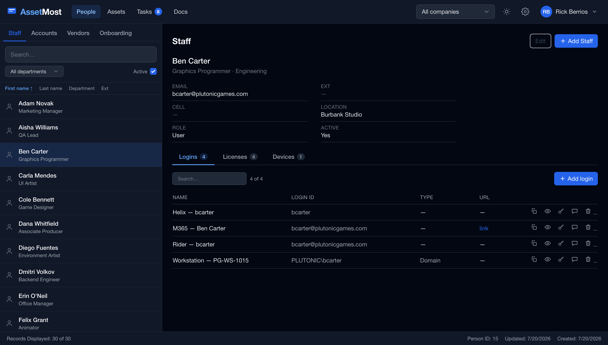

One person, one screen.
Jensen's profile is the hub: his contact card, plus every login, license seat, and device he holds — connected, not scattered.
- Logins, licenses, devices as tabs on the person
- Search, department filters, column-header sorting

Every seat, priced and dated.
The seats Jensen holds — with the product, the vendor, the cost, and the renewal date in the same row. "Who has an Adobe seat?" stops being a research project.
- Renewal dates and amounts beside every seat
- Filter by product, grant with one drawer

Shared accounts, guarded.
Pooled logins, service accounts, break-glass credentials — the registry maps who holds what across your realm. And it locks behind your password, even mid-session.
- Floating accounts that change hands, tracked
- Re-auth required to open the registry

How Jensen got here: a form.
Onboarding is an SOP you run, not read. Name, start date, vendor accounts, floating seats — submit, and the person, the credentials, and the tasks are created together.
- Each vendor account becomes a registry credential + a task
- Steps carry
Why/How/Done when

A tag that means something.
PG-LT-1007 — company prefix, readable over the phone, findable in search. Specs, serials, IPs, and the room it sits in, with the people assigned to it.
- Auto-issued asset tags, full lifecycle
- Locations and rooms — "what's in 104B?" has an answer

The week remembers itself.
Setting Jensen up spawned real tasks — on a weekly rolling sheet where unfinished work carries into the current week on its own. Priorities, progress, done-dates; nothing falls off the edge.
- Type, press Enter — that's the add flow
- Projects and a timeline when work outgrows the week

Even at 2 a.m.
The whole app has a dark mode — one click in the header. Same screens, easier on the eyes when the maintenance window opens.
